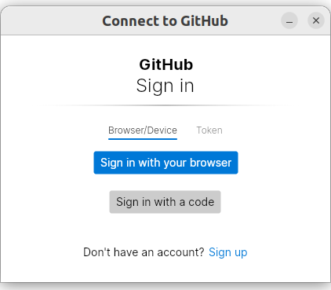

|
cncjs autolevel widget blog December 2022 |
|
|
cncjs autolevel widget blog December 2022 |
In order to document the experience, I decided to create a
blog to capture the steps taken.
I found out that github supports creating web pages-This
seems the logical place to put this information.
Add, commit, and push your changes:
https://docs.github.com/en/get-started/getting-started-with-git/about-remote-repositories
Ways to authenticate:
Create classic token and use it in place of the password
when issuing git push
https://docs.github.com/en/authentication/keeping-your-account-and-data-secure/creating-a-personal-access-token
Alternative method:
https://github.com/GitCredentialManager/git-credential-manager
Authentication for git could be done in the past by entering user name and password in the command line. github no longer allows this method, instead we can use a credential manager.
preparation for using credential manager
git config --global credential.credentialStore
secretservice
now, when running git push

Click on Token and enter the token generated in the
previous step.
Now git push will work without entering the credentials.
Now we can start with the process of working on cncjs.
Original cncjs repository is at
https://github.com/cncjs/cncjs
In the root of this repository is a file named
CONTRIBUTING.md
It describes how to setup devcelopment environment.
https://docs.github.com/en/get-started/quickstart/fork-a-repo